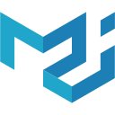
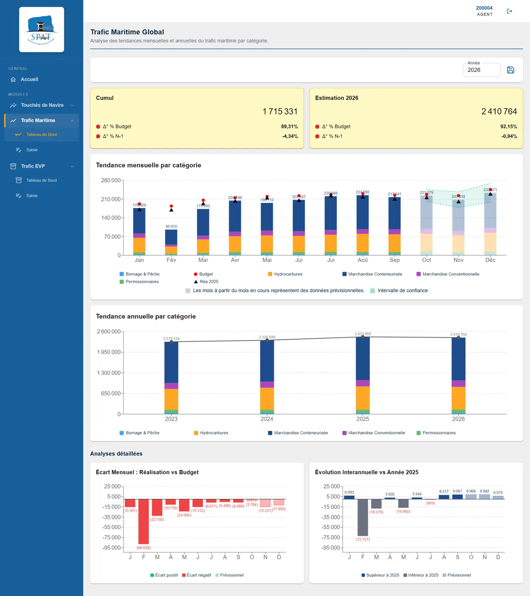
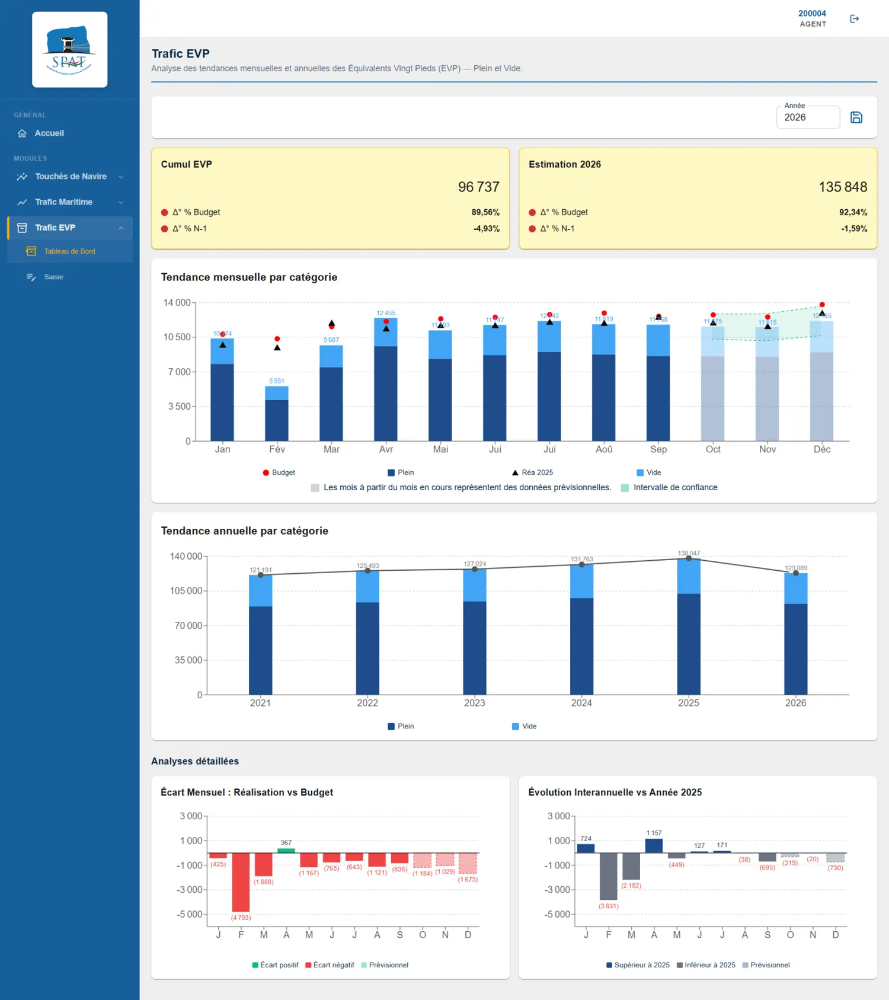
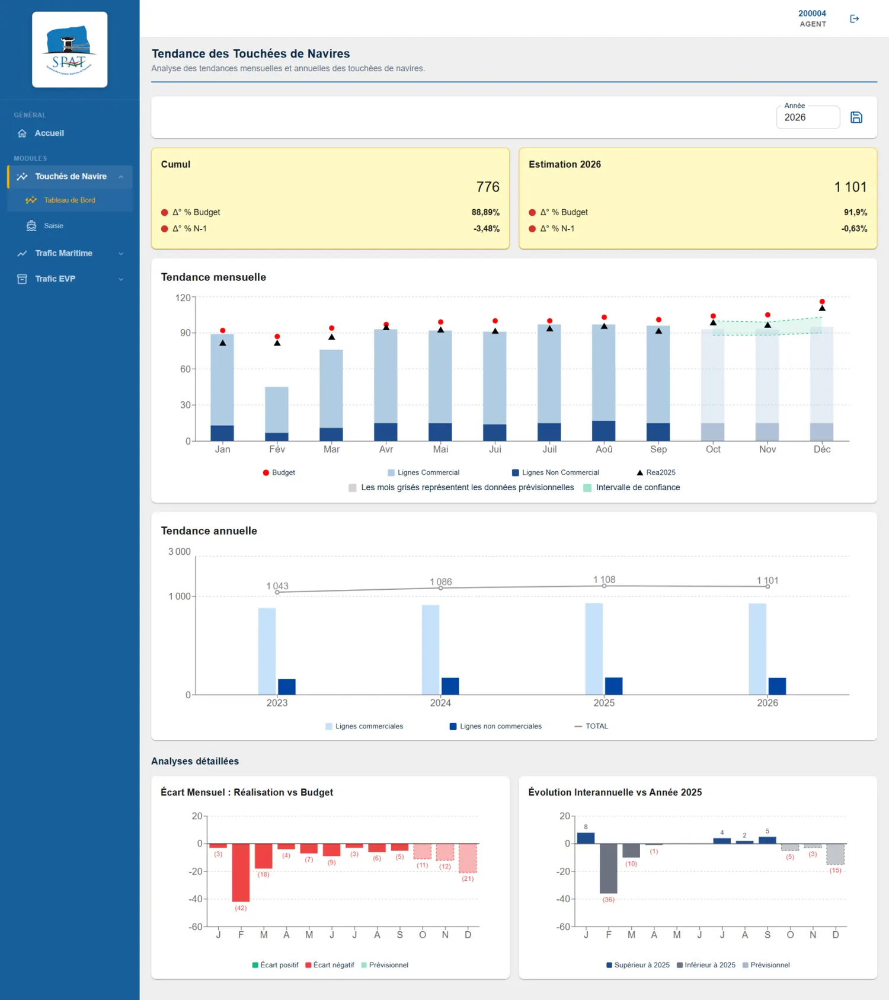
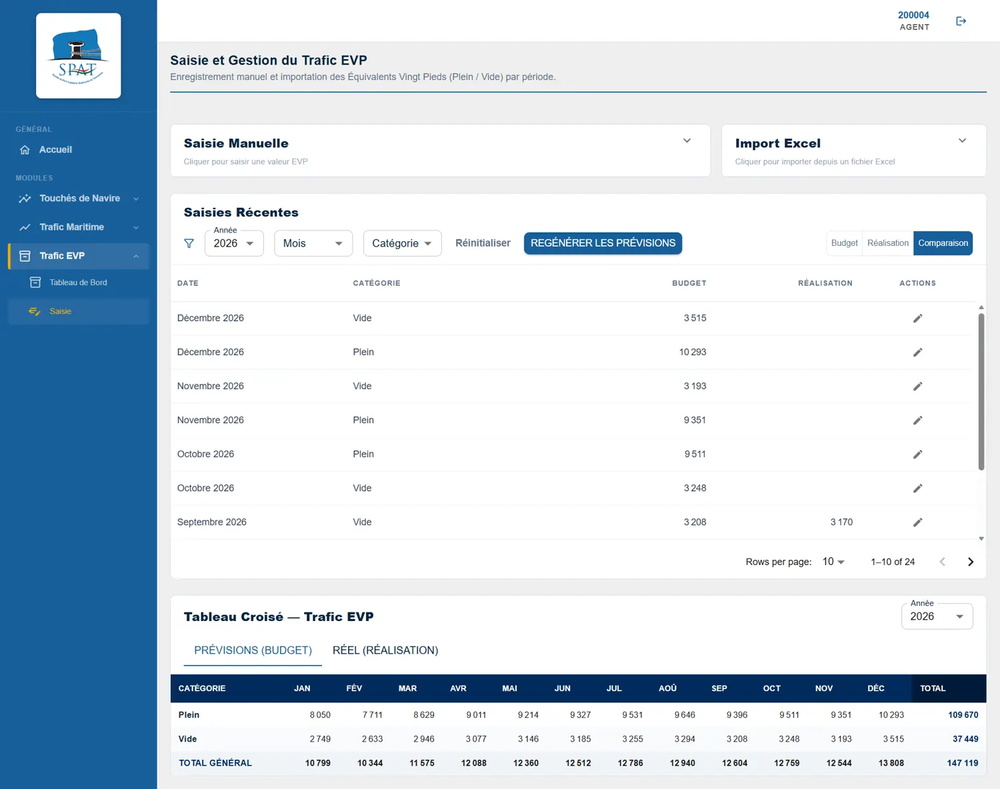
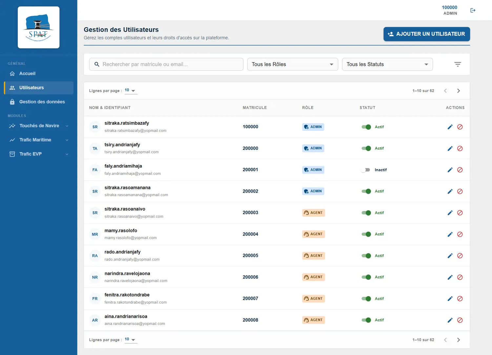

SPAT
Plateforme de pilotage des activités portuaires

Material UIJavaSpring BootPostgreSQLDockerPythondbtContexte — Rendre les données portuaires lisibles. Réunir le trafic maritime, les volumes conteneurisés en EVP et les touchées de navires dans un outil de pilotage.
Mon rôle
Dans le cadre de mon stage à la SPAT, développement d’une application décisionnelle avec React et Spring Boot et d’un pipeline ELT avec Python et dbt pour préparer les données des indicateurs d’activité.
Solution & fonctionnalités
- Tableaux de bord du trafic maritime, des EVP et des escales de navires
- Indicateurs financiers liés aux produits et engagements
- Saisie et importation des données opérationnelles
- Gestion des utilisateurs et des rôles
- Pipeline ELT avec Python et dbt pour préparer les données analytiques
Environnement technique
React, TypeScript et Material UI pour les interfaces ; Java et Spring Boot pour le backend ; PostgreSQL pour les données et Docker pour l’environnement applicatif. Un pipeline ELT utilise Python pour l’extraction et le chargement, puis dbt pour les transformations SQL.
Point technique : articuler l’extraction et le chargement des données avec Python, leur transformation avec dbt, puis leur restitution dans les tableaux de bord.
Résultat observable
Les cinq vues ci-dessous montrent les tableaux de bord, la saisie et la gestion des utilisateurs. Les chiffres présentés sont fictifs et ne constituent pas des résultats de performance.
L’application en images





Captures réalisées avec des données fictives. Cliquer sur une image pour l’agrandir.